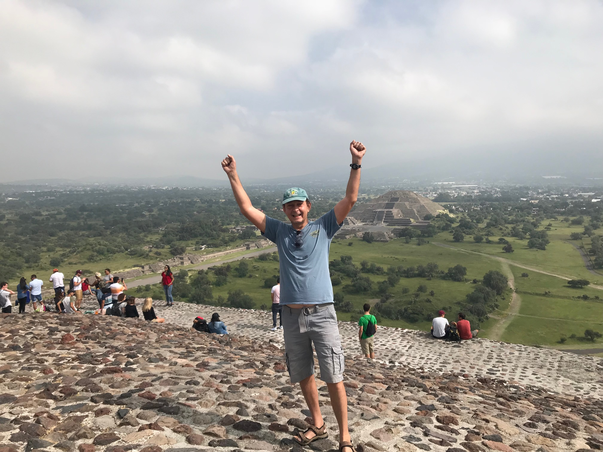
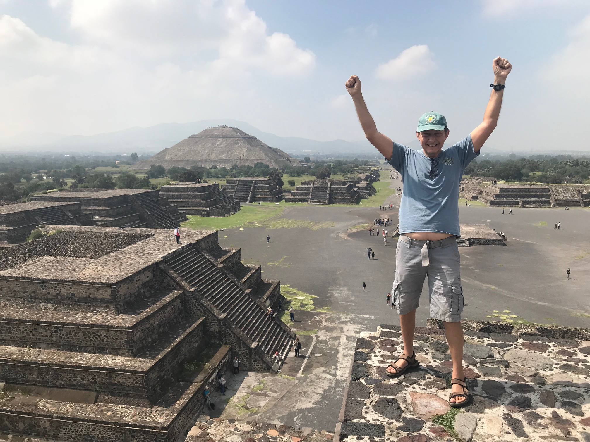
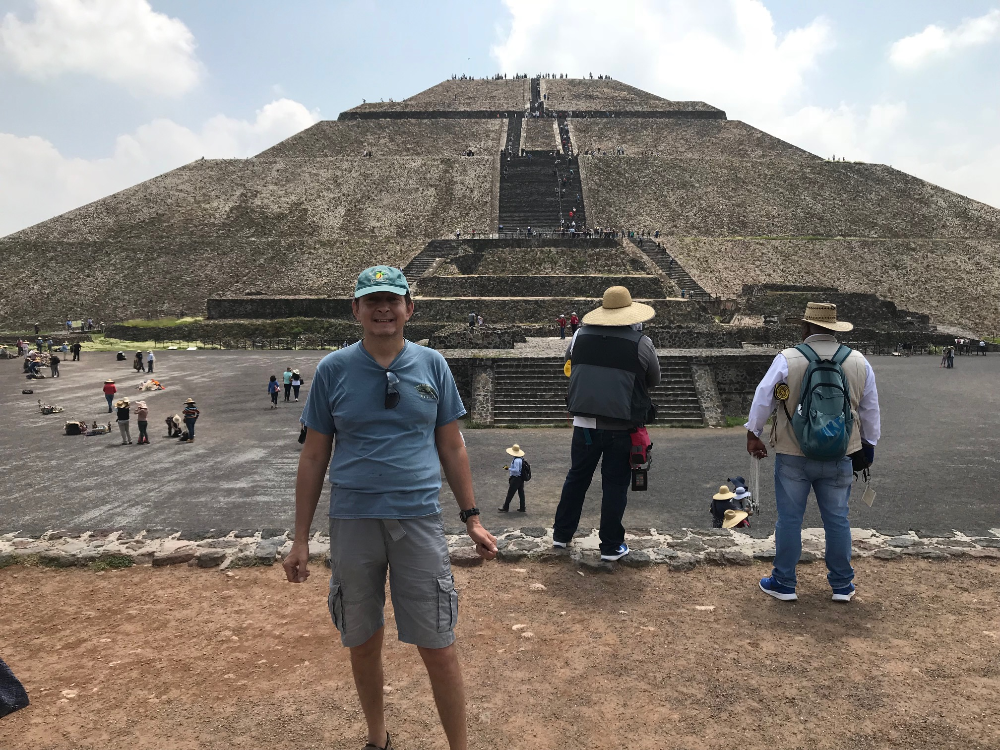
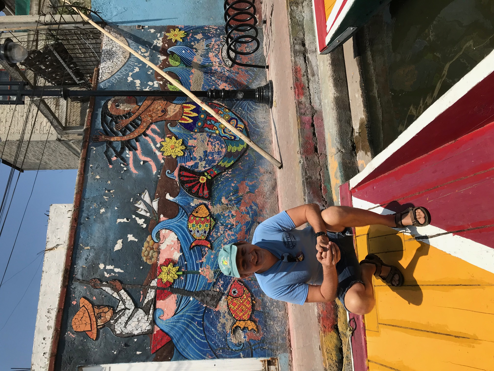
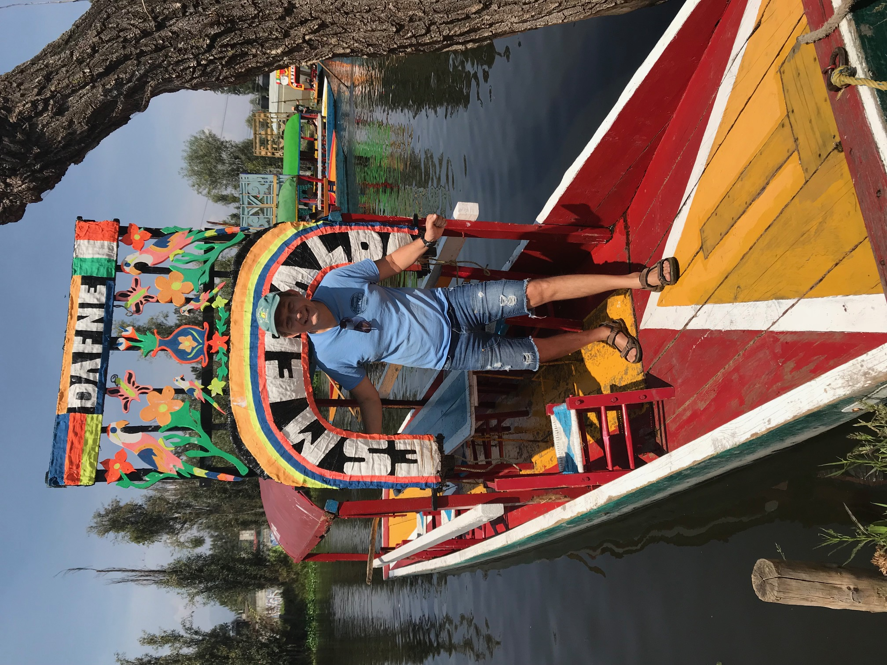
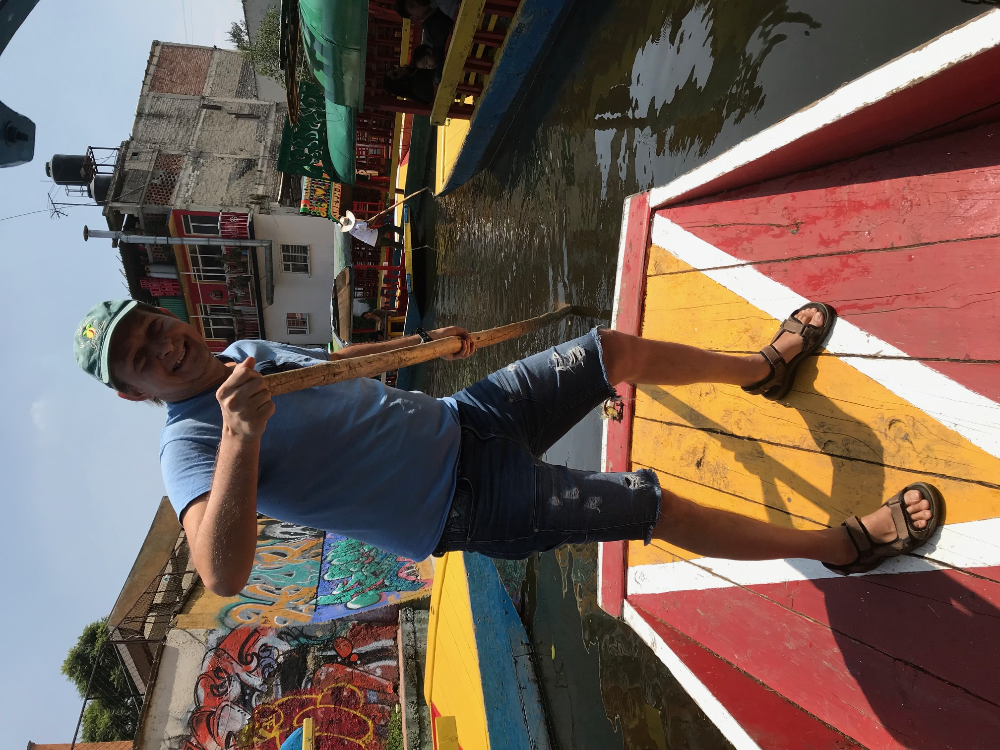

Pyramid of the Sun
езжайте на метро до станции Autobuses del Norte на желтой ветке 5. Цена 5 песо за поездку. Выйдите на автовокзале, найдите снаружи знак Puerta 8. Купите билет за 68 песо или лучше 136 песо туды сюды. не каждая кассирша говорит по английски. Лист бумаги на котором написано Teotihuacan может помочь. Потому что есть вероятность что вы произнесете это слово неправильно. Произносится как Тэйтиуакан с ударением на последний слог. Пройдите на посадку. Там будут автобусы по всей стране. Внимательно смотрите время отправления.
Примерно через час вы прибудете Тэйтиуакан. Вы не пропустите потому что все иностранцы в вашем автобусе будут выходить на этой станции. Купите билет, это около 100 песо в киоске за наличные. Приезжайте к 9 утра пока туристких автобусов еще нет. Наслаждайтесь парком. Я слышал что восхождения на вершину ограничены в последние годы. Когда будете выходить ищите Puerta 2 на выходе. Там нет четко обозначенной остановки. Но будут туристы которые ждут авобуса.
Если Вы решите взять skip-the-line tour из Тэйтиуакана это будет 29 долларов на человека за тур и где-то 9 долларов за транспорт. Если автобусный тур из Мехико сити то это начинается с 51 доллара на рыло. Автобус прибывает в то время когда толпа уже там. Я заплатил 246 песо или 14 долларов.
Travel agency chanrges from $38/person. I paid $14/person



Mexico City Canals
сначала я сел на поезд и доехал до станции Таскуэнья. Это последняя станция на синей ветке 2. Это стоило 5 песо. Там я пересел на линию ТЛ и доехал до станции Сочимилко за 3 песо. Прошел пешком до канала пару минут, где арендовал лодку со шкипером за 50 долларов. Таким образом, общественный транспорт был $1 на рыло туды сюды.
во время тура купил большой стакан пулке. это традиционный мехиканский слабоалкогольный напиток который напоминает брагу. Кажется $10. Редкое место где можно найти пулке.
Убер стоил бы около 450 песо ($27) в один конец. Время езды 45-60 минут.
Агенства берут 47 долларов с носа если начинается в Сочимилко. Такой тур включает аренду самой гондолы а также иногда бесплатные напитки как пиво, но не пулке. Длится 2.5 часа. либо 80 долларов с носа если автобусом из центра города. Это занимает 5-6 часов.
I took Mexico city metro to get to Tasquena station (Blue Line #2 5MXN). Then I switched to TL Line to take a train to Xochimilco Station (last station 3MXN). So total I spent on train is below $1. Some guides say that travel agents meet tourists at Xochimilco Station. I did not see any agents. Then I walked to Canals and rented a boat for $50.
While on the boat, I requested pulque, which was probably around $10 for a large glass. That's the only place in Mexico where I saw pulque. Tastes like BRAGA.
For comparison, Uber from Zocalo to Xochimilco would cost around 450 MXN ($27). Takes about 45-60 minutes. Longer during rush hours.
Travel agency charges $47/person from Xochimilco or $80/person from Mexico City center. I paid $50 for entire group + $1/person for metro. And metro is much faster considering traffic in Mexico City


